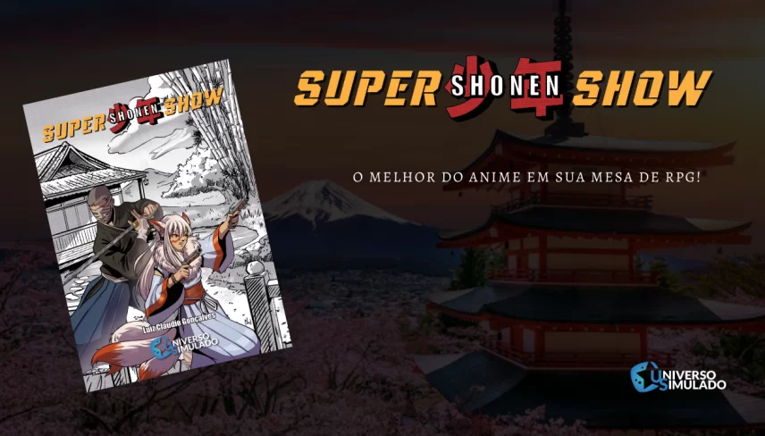

SUPER SHONEN SHOW
Você acabou de sintonizar a antena da sua televisão para a primeira transmissão de SUPER SHONEN SHOW, o RPG que te leva de volta ao tempo em que sua imaginação cabia dentro de um tubo de imagem.

Seja um adolescente pilotando um MECHA, treinando um monstro de bolso ou invocando o poder dos
jutsus neste RPG que te
leva ao mundo extraordinário dos animes. SUPER SHONEN SHOW é um MÓDULO BÁSICO de RPG
que utiliza
o sistema TTT para
emular o estilo explosivo dos animes shonen, com obras como “Naruto”, “Dragon Ball”, “Yu Yu
Hakusho”, “Full Metal
Alchemist” , “Tiger and Bunny”, “One Piece”, “Boku no Hero Academia”, “Cowboy Bebop”,
“Samurai
X”, “Pokemon”,
“Beserker”, “New Genesis Evangelion”, “Ataque de Titãs”, entre tantos outros…
Trata-se de um jogo narrativista e gramatical; versátil o suficiente para reproduzir os gêneros
e demografias dos
ANIMES, sem a necessidade de fazer cálculos ou aprender toneladas de regras.
Além disso, seu sistema é compatível e complementar ao SUPER TV SHOW, permitindo criar
combinações ainda mais
interessantes e divertidas.
CARACTERÍSTICAS INCRÍVEIS DO JOGO! Experimente episódios em estilo KISHOTENKETSU, o jeitinho asiático de contar histórias. Episódios especiais baseados em TREINAMENTOS e CAMPEONATOS, com direito a regras de “PLAYERS VS PLAYERS” . Libere o poder dos CHAKRAS em um sistema que personaliza o KI (energia da vida) do seu cenário. Viva aventuras em diversos períodos históricos japoneses ou seja transportado para mundos de fantasia e ficção científica, no melhor estilo isekai. Destrua seus inimigos com manobras iradas como Flashback, Forçando o KI e Nonsense (CHIBI). Pilote MECHAS, tenha MONSTRINHOS DE ESTIMAÇÃO e crie os JUTSUS mais bizarros Apesar de focar no SHONEN, o jogo também abraça outras demográficas como o SEINEN e o SHOUJO. E muito mais….
DIMENSÕES
EQUIPE DE CRIAÇÃO
SUPER TV SHOW
Você acabou de sintonizar a antena da sua televisão para a primeira transmissão de SUPER TV SHOW, o RPG que te leva de volta ao tempo em que sua imaginação cabia dentro de um tubo de imagem.

SUPER TV SHOW é um RPG nostálgico e divertido que te ensina a criar mundos, heróis e
aventuras
inspirados nos antigos
desenhos animados de ação da sua infância. Títulos como Space Ghost, He-Man, Thundercats,
Comandos
em Ação, Galaxy
Rangers, Ben 10, Mutante Rex, Avatar, Defensores da Terra, Dino-Riders e tantos outros são
fontes de
inspiração.
O jogo traz inovações ao apresentar regras estruturadas no formato de programas de TV, incluindo
temporadas, criação de
episódios, pausas para comerciais e design para jogos solos, cooperativos, guiados e em
streaming. É
um dos primeiros
jogos do mundo a oferecer regras para essas plataformas.
Baixe o fastplay aqui: Super Tv Show Fastplay
Apoie em: Meeple Starter